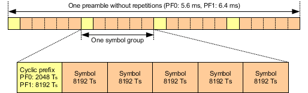
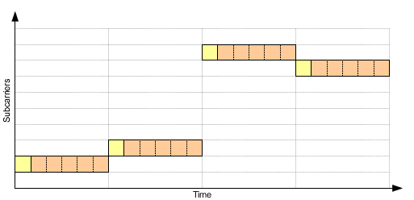

In the time domain, a single preamble consists of four symbol groups. And a symbol group consists of one cyclic prefix (CP) and five symbols.
The length of the CP depends on the preamble format (PF). There are two preamble formats defined by 3GPP, format 0 and format 1. The symbol length is fixed.
Lengths are often defined in multiples of the basic time unit Ts (1 Ts = 1/30.72 MHz ≈ 32.55 ns).
The following figure provides an overview.

The frequency domain covers 180 kHz and is divided into 48 subcarriers, each 3.75 kHz wide. The subcarriers are numbered from 0 to 47.
Preambles are transmitted on a single subcarrier with frequency hopping between the symbol groups. The following figure shows an example for the transmission of a single preamble.

For more details, see 3GPP TS 36.211 section 10.1.6.1 "Time and frequency structure".